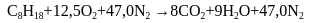

No interior do motor de um carro é onde ocorre a queima do combustível, sendo muito bem regulada e utilizando o combustível corretamente. Não basta apenas que o combustível tenha um bom poder de explosão, ele também precisa de alguns aditivos que funcionam como antidetonante, a fim de não comprometer a vida útil das peças que compõem o motor.
Anteriormente, adicionava-se chumbo tetraetila, porém essa substância mostrou-se nociva ao meio ambiente e aos seres humanos. Atualmente, no Brasil, é adicionada uma pequena quantidade de álcool à gasolina com a mesma finalidade: servir de antidetonante.
Como dito anteriormente, as quantidades de combustível injetadas no motor são dosadas. E não é injetado somente combustível, mas também uma determinada quantidade de ar para que a combustão tenha êxito. O responsável por toda essa logística é o Carburador ou a Injeção Eletrônica.
Veículos mais datados utilizavam o Carburador para realizar essa mistura combustível-ar, porém atualmente os carros são produzidos com Injeção Eletrônica que se mostram mais eficientes, se comparadas ao seu antecessor.


A direita temos uma imagem de um carburador de Opala Caravan 6 cilindros.
Ao lado da anterior, temos uma representação de uma Injeção Eletrônica.
A gasolina é uma mistura de vários hidrocarbonetos, que pode ser representada por C8H18.
A estequiometria da combustão completa da gasolina se dá pela equação:

Com alguns cálculos é possível definir a proporção estequiométrica da mistura combustível-ar, que é igual a 15. Ou seja, são necessárias 15 unidades de ar para cada unidade de gasolina injetada. Contudo esse resultado é obtido considerando uma reação de combustão completa; normalmente os veículos utilizam uma mistura mais econômica, no sentido de consumo de combustível, o que admite um excesso de ar para aumentar a eficiência da combustão.
Na combustão dentro de um motor, deveria haver uma reação de oxidação, que combinaria o oxigênio e carbono, produzindo dióxido de carbono. Mas na prática não é isso o que acontece, já que o resultado disso é a geração de CO (monóxido de carbono), que é um poluente tóxico.
Além desses, há também outros produtos da combustão interna de um motor. Como: dióxido de enxofre, sulfeto de hidrogênio, alguns óxidos de nitrogênio, hidrocarbonetos, aldeídos e particulados.